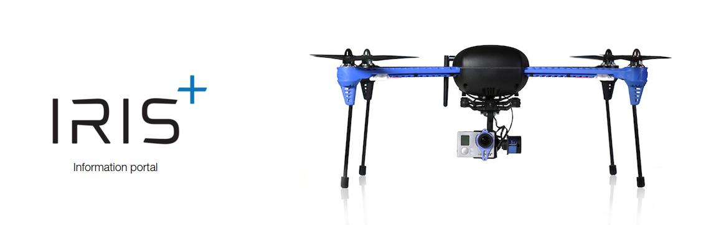
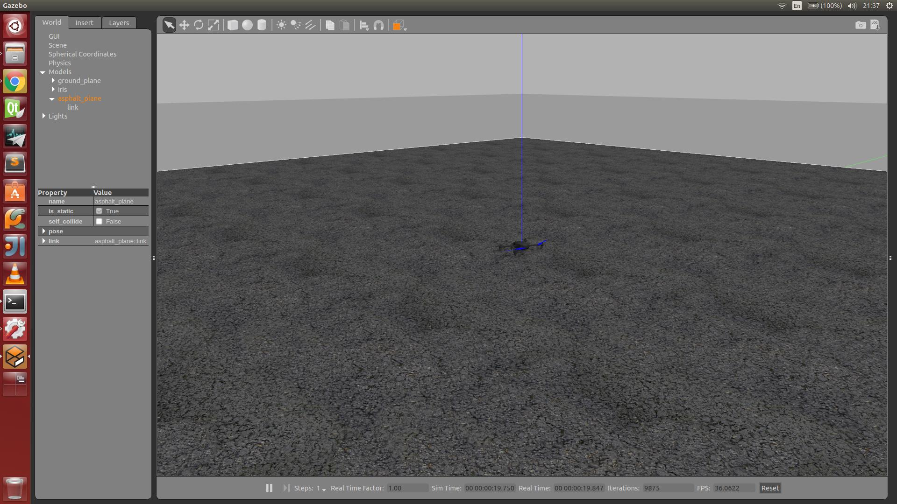
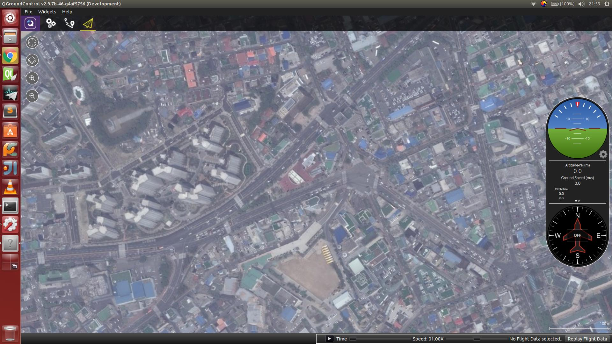
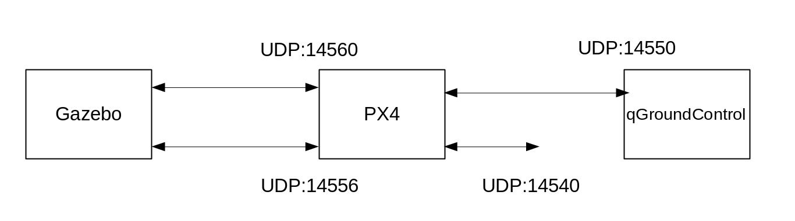

Introduction
여러분 안녕하세요 그 동안 잘 지내셨는지요. 이전 연재 "Pixhawk 소스 코드로 빌드하기"의 마지막에서 SITL에 대한 설명을 드린다고 해놓곤 깜빡하고, 원래 순서데로 연재를 하고 있었네요. 이점 양해 말씀드리면서 SITL에 대한 시스템 구축을 먼저 하고 넘어가도록 하겠습니다. 전에도 말씀드렸다시피 본 연재글은 Pixhawk의 SITL 기반으로 코드 분석을 진행될 것이기 때문에 제가 생각해도 오늘 강좌를 먼저 하는 게 나을 것 같습니다. 많은 양해 부탁드립니다. 자.. 그럼 시작해 볼까요?
Gazebo SITL
이 부분은 앞에서 말씀 드린 부분과 어느정도 중복이 될 것 같긴한데, 그래도 다시 한번 짚고 넘어간다는 마음으로 진행하겠습니다. (벌써 쓸거리가 떨어진건가요 흑흑 ㅠㅠ) 전에도 말씀드렸지만, Pixhawk의 eco-system은 어느정도 잘 정비가 되어진 것 같습니다. 그중 하나가 바로 SITL이지요. SITL은 순수 소프트웨어 기반의 시뮬레이션이라고 보면 될것 같습니다. 사실 이 용어에 대해서는 여전히 많은 견해들이 있지만, 저는 Pixhawk에서 정의한 용어를 그대로 사용하도록 하겠습니다. 어찌되었든 SITL은 하드웨어는 필요없는 순수한 소프트웨어 위주입니다. 그래서 처음에 공부하는 입장에서는 SITL이 편하지요. 그런데.. 절대 시뮬레이션을 맹신하시는 것도 그닥 좋지 않습니다. 시뮬레이션은 시뮬레이션 뿐입니다. 어느 드라마에서 나온 "현장이란 말입니다."와 약간 일맥상통한다는 느낌입니다. 맞습니다 시뮬레이션에서는 정말 잘되었는데 왜 밖에서 비행하면 이모양입니까... 라고 말이 나올정도지요. 그때부터는 사실 노하우가 정말 많이 필요하지만, 이것은 제 생각으로는 책상에서 배워서 되는 것은 아니고 몸으로 체험하면서 얻는 경험이라고 보시면 될것 같습니다. 따라서.. 여러분들도 어느정도 이론이 정립되면 거기서 끝내지말고 실제 환경에 적용하는 습관을 들이시길 바랍니다. 아.. 약간 딴 방향으로 흘렀군요. 죄송합니다.
그러면 왜 SITL과 같은 것을 하나요? 하나도 맞지 않는다면서 말이지요. 그건 바로 알고리즘 검증때문이라고 생각합니다. 새로 개발한 알고리즘을 체크하기 위해서는 우선 아주 좋은 환경에서.. 매번 똑같은 환경에서 시험을 해야 개선점이 보일 겁니다. 그래서 SITL이 필요한 거지요. 우리는? 맞습니다. 공부하기 위해서 SITL이 필요한거지요. 매번 같은 환경을 만들 수 있을 거니깐요. 뭐.. 다들 아시는 내용이시겠지만, 주절주절 한번 해보았습니다. 이제 SITL로 진행하고자 하는 이유를 아시겠지요? 그럼 이제 본격적으로 시작해보도록 하겠습니다.
Gazebo
Pixhawk에서는 SITL을 위해 기본적으로 Gazebo라는 것을 사용합니다. Gazebo.. 표윤석 박사님이 열창하시는 ROS를 공부하신 분이라면 잘 아시겠지만, 그렇지않은 분들을 위해 간단히 설명드리겠습니다. Gazebo는 쉽게 말씀드리면 오픈소스 기반의 로봇 시뮬레이터입니다. 2002년 Nate Koenig라는 사람에 의해 개발이 시작되었으며 지금은 ROS와 함께 오픈소스 로봇 시스템을 이끌어가고 있는 프로그램이지요. 최근에는 유명한 로봇 첼린지 대회에서 기본 시뮬레이터로도 사용이 되고 있다고 합니다. 그렇다면 왜이리 Gazebo가 유명해진걸까요? Gazebo는 다양한 기능이 있지만, 우선 다양한 물리엔진을 탑재하고 있습니다. 그래서 실제 환경에 근접하게 만들 수 있다는 것이지요. 하지만 절대 실제 환경과는 똑같지 않습니다. (맹신은 절대 안됩니다.) gazebo의 기본 운영 시스템은 우분투이구요. 맥에서도 잘 동작되는 듯 싶습니다. 윈도우는 ... 아직 인것 같고, gazebo 8.0 부터는 될것 같습니다. 어찌되었든 메이저는 아니므로 우리는 역시 우분투로 갑니다. 그외에도 gazebo는 그래픽스 부분도 뛰어나고, 다양한 로봇 모델링도 되어있는 것 같습니다. 하지만 더 좋은 것은 역시나 개발자들이 쉽게 접근 할 수 있도록 하는 플러그인 방식이라는 것입니다. 즉, 사용자가 플러그인 방식으로 센서 노이즈라든지 환경등을 직접 개발하여 적용할 수 있습니다. 그리고 ROS와의 연동이 매우 잘 되므로 ROS의 기능을 사용할 수도 있게 된거지요.
Build & Run
우선 Gazebo부터 설치해보도록 하지요. gazebo를 우분투에서 설치하는 것은 gazebosim.org에 가보면 쉽게 설치할 수 있습니다. 우리는 역시나 apt-get을 사용하여 설치하고자 합니다. 기본적으로도 되어있지만,우선 apt-get을 받기 위한 서버 위치를 받습니다.
sudo sh -c 'echo "deb http://packages.osrfoundation.org/gazebo/ubuntu-stable `lsb_release -cs` main" > /etc/apt/sources.list.d/gazebo-stable.list'
다음으로 키를 셋업합니다. 기본적으로 제공되는 패키지외의 다른 정보를 받기 위해서는 이런 일련의 작업이 필요하다고 생각하시면 됩니다.
wget http://packages.osrfoundation.org/gazebo.key -O - | sudo apt-key add -
다음으로 apt-get으로 설치를 하시지요
sudo apt-get update
sudo apt-get install gazebo6
# For developers that work on top of Gazebo, one extra package
sudo apt-get install libgazebo6-dev
우분투에서는 gazebo 6.0을 받기를 권장하고 있습니다. 맥은 7.0을 받아야 하구요. 왜 그래야하는지는 정확히는 모르겠지만, 아마 버전과 매치되는 뭔가가 있는 것 같습니다. 여기까지 하셨으면, 이제 pixhawk의 SITL을 사용할 준비는 다되었습니다. 축하드립니다. 짝짝짝~
이제 Pixhawk에서 SITL을 구동해보도록 하겠습니다. Pixhawk에서는 이미 몇가지 드론 모델을 만들어놓았고, Pixhawk내의 자세제어와 같은 알고리즘등을 직접 사용할 수 있도록 되어있습니다. 전에 받으셨던 Pixhawk 소스코드를 보시면 Tools/sitlgazebo에 그 소스코드를 보실 수 있습니다. 참 이 소스 코드는 PX4/Firmware에서 관리하는 게 아니고 PX4/sitlgazebo에서 관리합니다. 그 말씀인 즉, 이 코드 바꾸시고 잘못 업데이트하시면 날아갈 수 있다는 뜻입니다. 따로 관리를 해주셔야 합니다. 이 부분이 이해 안되시는 분은 git을 조금 더 공부해주시면 감사하겠습니다. git은 여러번 말씀드리지만, 오픈소스 공부를 위해 반드시 익혀야 하는 버전관리 툴입니다. 모든 기능을 아실 필요는 없고, 우선 익숙해 지는게 중요합니다. 많이 사용해보시고, 많이 어려움을 겪다 보시면 쉽게 친숙해질겁니다. 미운정이 든다고나 할까요. ㅋㅋㅋ (썰렁했다면 이해해주시길 ...)
이제 Pixahwk의 SITL 부분을 빌드해보도록 하겠습니다. 현재까지는 소스코드 분석이 아직 들어가지 않았으므로 아무 버전을 이용해도 좋습니다. 여기서는 master 버전을 사용해보도록 하겠습니다. 그전 강좌를 따라 하셔서 받으신 분들은 아래와 같이 깃허브로부터 최신 버전을 업데이트 합니다.
$ git pull
$ git submodule update
이후 sitl용으로 빌드를 합니다.저희는 "posixsitldefault"를 사용하도록 하겠습니다.
$ make posix_sitl_default
에러없이 잘 컴파일 되셨나요? 아마 에러가 있으신 분들도 계시겠지요? 계시판에 올려주시면 제가 아는 만큼 답변드리겠습니다. (요즘은 대신 답해주시는 분들이 계셔서 너무너무 감사하고 있습니다.)
다음으로 실행을 시켜보도록 하겠습니다. Pixhawk에서는 다양한 비행체 모델을 가지고 있습니다. 그 중 하나를 선택하셔서 하시면 됩니다. 최근에 VTOL에 대해 문의하시는 분들이 많으신것 같은데, 그 역시 SITL에서 제공하고 있으니,참고하시길 바랍니다. 어찌되었든 다음 중 하나 골라서 실행하시면 자신만의 비행체를 동작시킬 수 있습니다. 자세한 내용은 dev.px4.io사이트를 차고하시길 바랍니다.
$ make posix_sitl_default gazebo_iris
$ make posix_sitl_default gazebo_standard_vtol
$ make posix_sitl_default gazebo_tailsitter
$ make posix_sitl_default gazebo_plane
뭐 멀티콥터부터 고정익 비행기, VTOL, TailSitter 형태의 비행체까지 정말 다양하지요? 저희는 여기서 gazebo_iris에 대해서 주로 다룰 예정입니다. 참고로 IRIS는 3DR Robotics사에서 개발한 멀티콥터로 Pixhawk가 탑재된 기본 멀티콥터입니다.

자 실행을 시키시면 터미널 창에 뭐라뭐라 나오면서 gazebo화면이 똭! 뜰겁니다.  처음 반응은 우와~ 이지요. 그다음에 뭘 할 수 있나요? 이거 어찌하는 거지? 저도 처음에는 이랬습니다.
우선 가장 간단히 할 수 있는 것은 터미널 창을 통해 takeoff 명령을 내려보는 겁니다. 터미널 창은 pixhawk 내부 시스템이라 보시면 됩니다. 실제 Pixhawk 펌웨어에서 뿌려주는 메시지가 여기에 그대로 나옵니다. 터미널에서 엔터를 치시면 아래와 같은 프롬프트가 나올겁니다.
pxh>
여기에 help 라는 명령어를 실행시키시면 수행할 수 있는 명령어들이 보입니다. 우리는 이중 commander 명령어를 통해 takeoff를 수행해보도록 하겠습니다. 참, 혹시 중간에 다른 메세지들이 뜰수도 있습니다. 이는 무시하시고 타이핑 하십시요.
pxh>commander takeoff
명령어를 치셨다면 엔터키를 누르고 gazebo쪽을 보세요. 그럼 IRIS가 takeoff하는 것을 보실 수 있습니다. 짜잔~ (여기까지 하셨으면 스스로를 다독거려주시길.. gazebo를 통해 pixhawk SITL을 수행하신겁니다!!)
QGroundControl
자..그럼 다음에는 무엇을 해볼까요? 경로점을 만들고, 한번 이동해볼까요? ............ 생각해보니 문제는 지상국 시스템이 없군요. 뭔가 멋진 GUI를 가진 지상국 시스템 말이지요. 비행 상태 부터 명령을 보내는 모든 것들을 말이지요. Pixhawk는 자상하게도 그런 지상국 시스템을 오픈소스로 풀어놓았답니다. 암튼 대단합니다. 이또한 Lorenz Meier가 관리자로 있으니, 이사람은 도대체 뭐하는 사람일까요? 하루에도 수십개의 commit을 해야할 것 같은데... 저 처럼 게으른 사람은 절대 할 수 없을 것 같습니다. ㅠㅠ
각설하고 QGroundControl에 대해 알아보지요. QGruondControl은 앞에서 말씀드린데로 오픈소스이고, QT로 개발되었습니다. 혹시 QT에 대해서 잘 모르시는 분들은 그냥 Visual Studio와 같은 개발 환경쯤이라고 생각하시면 됩니다. 개인적으로 정말 좋아하는 개발환경입니다. 왜냐구요? QT는 한번 개발해 놓으면 윈도우, 리눅스, 맥 가리지 않고 사용할수 잇습니다. 요즘은 안드로이드 폰이나 아이폰과 같은데에서도 사용할 수 있으니 정말 대단하지요? "그럼 QGroundControl은 QT로 개발되었으니, 아이폰이나 안드로이드폰에서도 동작 가능하다는 얘기인가요?" 맞습니다! 저도 서브로 넥서스에 QGroundControl 설치하여 사용하고 있습니다. 최근 버전인 2.9.7은 많이 화려해지고 있어서 더 좋습니다. 자세한 내용은 웹사이트를 참고하시길 바랍니다. QGroundControl 웹사이트도 pixhawk와 같이 새롭게 단장이 되었습니다. 하지만 우리는 아직 익숙한 예전 웹사이트를 찾아가 보도록 하겠습니다. 이쪽에 가보시면 Download라는 메뉴가 있는데, 여기를 클릭하셔서 다운로드 받으시면 됩니다. Stable Version과 Daily Version이 있는데 요즘은 Daily Version만 바이너리로 제공하는 것 같습니다. 어찌되었든 여기에서 다운로드 받으셔서 실행시킵니다.
실행시키는 방법은 아래와 같습니다.
$ ./qgroundcontrol-start.sh
두번째 똭! 하고 멋진 QGroundControl이 뜹니다. 
이제 gazebo와 QGroundControl을 연동시켜보도록 하겠습니다. 우선 앞에서 설명한 것처럼 pixhawk를 수행 시킵니다.
$ make posix_sitl_default gazebo_iris
이후에 gazebo를 수행시킵니다.
$ ./qgroundcontrol-start.sh
그러면 자동으로 qgroundcontrol이 gazebo와 연동이 되면서 동작됩니다. 자동으로 연동되면 아이콘 메뉴 아래쪽으로 파란색 라인이 끝까지 이어지는게 보이실 겁니다. 그리고 나서 옆에 기체 상태 부분이 표시되고, 지도에서 기체가 보이실 겁니다. 이제 여기서 미션 명령을 내려보도록 하겠습니다. 아이콘 메뉴를 보시면 왼쪽에서 세번째 A->B로 되어 있는 아이콘이 있습니다. 이것을 클릭하시면 화면이 미션 설정 화면이 나타납니다. 이후 오른쪽에 잇는 "+" 버튼을 누르시고 원하는 위치를 더블클릭 하시면 그 화면이 waypoint (경로점)를 추가할 수 있습니다. 어느 정도 설정을 하셨으면 이제 비행을 해보도록 하겠습니다. 비행을 하시려면 먼저 ARM (프로펠러를 최소화로 동작 시키는 행위?)을 해야합니다. 아이콘 메뉴에서 4번째 (종이비행기 처럼 생긴 아이콘) 아이콘을 누르시면 화면 하단 중앙 부분에 ARM을 할 수 있는 게 보입니다. 이것을 밀어서 ARM을 시킵니다. 이후 Mission으로 비행 모드를 변경시키면 원하는 경로를 통해 비행하는 것을 보실 수 있습니다. 짜잔~ 그런데 말로만 하니 참 어려우시죠? 그래서 동영상 하나 준비해보았습니다. ^^ 따라해보시면 될것 같습니다. 아 중간에 실수로 waypoint를 잘못 조작하는 부분이 있습니다. 이 부분은 따라하지 않으셔도 됩니다. 따라해보기동영상
여기까지하신 분들은 두번째 자신에게 칭찬해주시길 바랍니다. 다독다독~. 자기 자신을 자주 칭찬해 주세요.. 대단하신 겁니다. 쵝오!!
How to work
여러분 이제 여러분은 SITL을 하기 위한 준비가 다 되었습니다. 그러면 내부가 어떻게 동작되는지 알아볼까요? 우선 전체 그림부터 보시죠. 
지금까지 저희가 수행했던 SITL은 크게 세 부분으로 나누어 집니다. 시뮬레이션을 위한 Gazebo와 비행 제어를 위한 Pixhawk, 그리고 지상국 시스템인 QGroundControl입니다. 이 세개의 프로그램은 UDP를 통해 Mavlink 메세지를 전달받습니다.중요한 것은 UDP로 통신하고 있다는 것이지요. 그 말인 즉, 각 모듈들을 분산해서 컴퓨터 3대에서 처리 가능하다는 말입니다. 분산처리가 가능하다는 것은 엄청난 혜택으로 이어질 수 있으니 참고하세요. 앞에서 보신 "make posixsitldefault gazebo_iris"을 수행시키면 gazebo가 실행이 되고, pixhawk 부분도 실행됩니다.
우선 gazebo가 실행되는 것은 Tools/sitl_gazebo/worlds/iris.world 부분이 실행됩니다. XML로 되어있고 여기를 잘 보시면 내부에서 iris 모델이 실행되고, 그 모델의 plugin 이 실행됩니다. 이 부분은 나중에 다시한번 설명드리도록 하겠습니다. 지금은 큰 그림에 집중하세요.
이후 pixhawk가 실행되는데 pixhawk가 실행되는 위치는 posix-configs/SITL/init/rcSgazeboiris 입니다. 이부분을 잘 보시면, 실제 동작되어지는 태스크들을 볼 수 있습니다. 이 부분도 나중에 다시 구체적으로 설명드리도록 하겠습니다. 이 절에서는 서로 어떻게 통신하는지에 대해서만 집중하도록 하겠습니다.
~
mavlink start -u 14556 -r 2000000
mavlink start -u 14557 -r 2000000 -m onboard -o 14540
mavlink stream -r 80 -s POSITION_TARGET_LOCAL_NED -u 14556
mavlink stream -r 80 -s LOCAL_POSITION_NED -u 14556
~
우선 mavlink라는 명령어가 보이네요. 이 명령어는 pixhawk에서 mavlink 메세지를 수신하고 송신하는 기능을 가지고 있습니다. 데몬 형식으로 계속 수행되는 방식으로 동작됩니다. 그 데몬 형식을 수행시키는 게 바로 "mavlink start" 입니다. 인자를 보니 "-u 15446"이 보이네요 이것은 UDP로 통신을 하고 15446 포트 번호로 mavlink 데이터를 수신받겠다는 의미입니다. 그리고 "-o 14540"은 14540 포트로 Mavlink 데이터를 송신하겠다는 의미입니다. "-o" 옵션이 없으면 기본적으로 14550을 쓰겠다는 의미입니다. 왜 이것을 두번이나 실행시킬까요? 그것은 mavlink 데이터를 받아야 하는게 다른 두개가 있다는 뜻이겠지요. 하나는 지상국 시스템이고 다른 하나는 지상국 시스템일수도 있지만, "-m onboard"로 봐서 온보드 시스템에서 받겠다는 의미일 것 같습니다. 온보드 시스템이 뭐냐구요? 음.. 사실 Pixhawk는 비행제어에만 특화된 보드입니다. 따라서 영상 처리같은것을 하기에는 무리데스네~ 이지요. 영상 처리는 주로 어떤 임무 수행과 같은 경우에 쓰이는데 온보드 시스템은 그런 임무 수행용이라고 보시면 될 것같습니다. 따라서 고성능 위주가 될 가능성이 높구요.
아.. 그리고 "mavlink stream"이 나옵니다. 이건 외부로 부터 mavlink 스트림 데이터를 수신하겠다는 것으로 받아들이시면 될것 같습니다. "-u 14556"은 UDP 14556으로 Mavlink 데이터를 수신받겠다는 얘기입니다.
Conclusion
자 여기까지 해서 SITL 시스템 구축하는 방법에 대해 알아보았습니다. 아직 정확한 코드에 대해서는 들어가지 않았지만, 이번에는 조금 어려웠을지 모르겠네요. 저도 처음에는 쉽게 생각했다가 글을 쓰면서 좀더 생각을 가다듬고 정리한 것 같습니다. 여기까지 따라오셨다면 일단 Pixhawk 시스템 설치를 어느정도 완료했다고 보시면 될 것 같습니다. 앞으로는 본격적으로 Pixhawk 코드에 대해 하나씩 분석해 나아가보도록 하겠습니다. 항상 말씀드리지만, 중요한 것은 큰 그림을 이해하는 것입니다. 그리고 내가 분석할 부분을 확실하게 정하시고, 그 부분을 위주로 하시길 바랍니다. 처음부터 "난 Pixhawk 의 모든것을 다 파헤쳐버리겠어!"라고 하시면 중도에 파묻히게 될수도 있으니깐요.. 자 그럼 다음 연재는 정해진 순서데로 다시 시작하도록 하겠습니다. 그때까지 안녕히계세요~~~
P.S.
혹시 제가 작성한 부분 중 잘못된 부분이 있을 수 있으니 댓글 부탁드립니다.